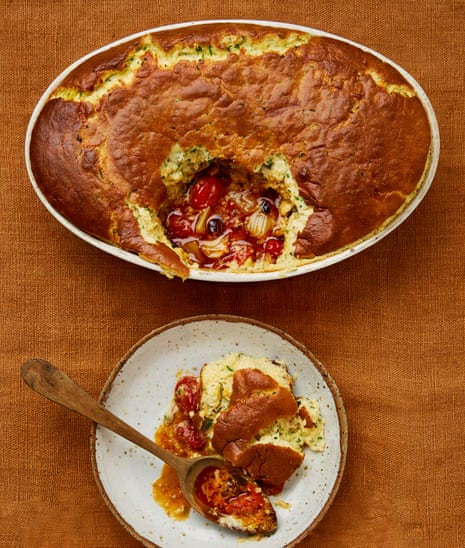

Tomato and gruyere soufflé

Don’t let anyone tell you that soufflé is (too) hard to make. Bof! The only thing you really need to worry about is timing. And get all your prep done first, so the egg whites, say, are ready and whisked for when the tomatoes come out of the oven, and all will be fine. Allez-y!
Heat the oven to very high – 240C (220C fan)/475F/gas 9. Put the tomatoes, fennel, tomato paste and oil in a 20cm x 30cm ceramic oven dish that’s at least 6cm deep. Add a teaspoon of the fennel seeds and a quarter-teaspoon of salt, toss to combine and roast for 20 minutes, until the tomatoes are charred and the fennel is tender.
Meanwhile, melt 75g of the butter in a medium saucepan, then add the flour and cook, stirring, for a minute, until the flour has cooked out and the mixture has turned into a paste. Slowly add the milk, stirring the whole time, until it’s all incorporated and the mix has come together into a smooth sauce. Stir in the mustard, another quarter-teaspoon of salt and a good grind of pepper, then bring to a simmer, turn down the heat and cook, stirring occasionally, for three minutes, until the mixture thickens. Tip the mix into a large bowl, leave to cool for a minute, then whisk in the egg yolks one at a time, until the souffle base is smooth.
Add the olives, chutney and remaining 50g butter to the tomato mixture and roast for another 10 minutes, until the tomatoes are charred and caramelised and the sauce coats the vegetables. Remove from the oven, and turn down the heat to 220C (200C fan)/425F/gas 7.
Whisk the egg whites to stiff peaks, then stir a third of them into the souffle base to loosen it a little. Stir in the gruyere, the remaining teaspoon of fennel seeds and the chives, then, with a spatula, gently fold in the remaining egg whites – the key word here is “gentle”; the aim at this stage is to knock out as little air as possible.
Use the extra 5g butter to grease the sides of the hot oven dish – you don’t need to remove the tomato mix to do this, but be careful because it will be hot – then pour the souffle mix on top of the tomato mixture. Bake for 25-30 minutes, until the souffle has risen and doubled in size, the top is golden and it has a uniform wobble.
Remove from the oven and serve immediately, using a large spoon to portion the souffle on to individual plates, then drizzling the tomato mix on top.